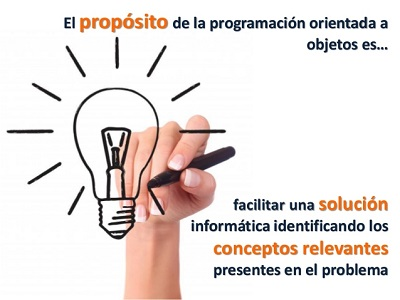

Es un paradigma de programación que viene a innovar la forma de obtener resultados. Los objetos manipulan los datos de entrada para la obtención de datos de salida específicos, donde cada objeto ofrece una funcionalidad especial.
Muchos de los objetos pre-diseñados de los lenguajes de programación actuales permiten la agrupación en bibliotecas o librerías, sin embargo, muchos de estos lenguajes permiten al usuario la creación de sus propias bibliotecas.
Origen
Los conceptos de la POO tienen origen en Simula 67, un lenguaje diseñado para hacer simulaciones, creado por Ole-Johan Dahl y Kristen Nygaard, del Centro de Cómputo Noruego en Oslo. En este centro se trabajaba en simulaciones de naves, que fueron confundidas por la explosión combinatoria de cómo las diversas cualidades de diferentes naves podían afectar unas a las otras.
Propósitos de la POO
El objetivo de POO es catalogar y diferenciar el código, en base a estructuras jerárquicas dependientes, al estilo de un árbol genealógico.
Los objetos se crean a partir de una serie de especificaciones o normas que definen como va a ser el objeto, esto es lo que en POO se conoce como una clase.
Las clases definen la estructura que van a tener los objetos que se creen a partir de ella, indicando que propiedades y métodos tendrán los objetos.

Imagen del propósito de la programación orientada a objetos.